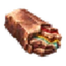
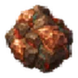

Ancestral Alloy¶

Every vein holds the memory of body, breath and will.
| Theme | Vitality |
| Effect | Forging: vitality properties far more likely |
| Potential | 0 |
| Azurite dust | 5 |
| Smelted from |  Runebearing Copper Ore |
All alloys: Alloys. How much more likely: how alloys weight the roll.
Properties it favours (329)¶
Forging with Ancestral Alloy makes these properties far more likely, wherever they can roll; on a given item only those that fit it are in the forge pool. A property that rolls on several kinds of item has a row for each.
Weapons (30)¶
| Mod | Type | Rolls on | Theme | From (item level) |
|---|---|---|---|---|
| #% reduced alternative attack stamina cost | Suffix | must be weapon; one of axe or spear | Vitality | Meadows (1) |
| #% reduced alternative attack stamina cost on primary attack hit recently | Suffix | must be weapon; one of axe or spear | Vitality | Meadows (1) |
| #% reduced attack stamina cost | Suffix | must be weapon; one of blood magic, bow, crossbow or elemental magic | Vitality | Meadows (1) |
| #% reduced attack stamina cost per # points of maximum carry capacity | Suffix | must be weapon; one of club or pickaxe | Vitality | Meadows (1) |
| #% reduced bow draw stamina cost | Suffix | must be weapon; one of bow | Archery | Meadows (1) |
| #% reduced cast stamina and eitr cost | Suffix | must be weapon; one of blood magic, elemental magic or sceptre | Sorcery | Meadows (1) |
| #% reduced charged attack stamina cost | Suffix | must be weapon; one of axe, crossbow or spear | Vitality | Meadows (1) |
| #% reduced chopping stamina cost | Suffix | must be weapon and axe | Gathering | Meadows (1) |
| #% reduced cost | Suffix | must be weapon; one of blood magic, bow, crossbow or elemental magic | Vitality | Meadows (1) |
| #% reduced cost | Suffix | must be weapon; one of blood magic, bow, crossbow or elemental magic | Vitality | Meadows (1) |
| #% reduced magical stamina and eitr cost | Suffix | must be weapon and magic weapon; one of blood magic or elemental magic | Sorcery | Meadows (1) |
| #% reduced melee stamina cost | Suffix | must be weapon and melee; one of spear | Vitality | Meadows (1) |
| #% reduced mining stamina cost | Suffix | must be weapon and pickaxe | Gathering | Meadows (1) |
| #% reduced shooting stamina cost | Suffix | must be weapon and shooting weapon; one of bow | Archery | Meadows (1) |
| #% reduced stamina cost of attacks with this item | Suffix | must be weapon and uses stamina | Vitality | Meadows (1) |
| +# eitr on kill | Suffix | must be weapon; one of blood magic, elemental magic or sceptre | Vitality | Meadows (1) |
| +# health on kill | Suffix | must be weapon; one of axe, crossbow, polearm, spear or sword | Vitality | Meadows (1) |
| +# stamina on crit | Suffix | must be weapon; one of bare hands, bow or fist weapon | Vitality | Meadows (1) |
| +# stamina on kill | Suffix | must be weapon; one of axe, crossbow or spear | Vitality | Meadows (1) |
| +#% life leech from physical attack damage | Suffix | must be weapon | Vitality | Meadows (1) |
| +#% life leech from physical attack damage | Suffix | must be weapon | Vitality | Meadows (1) |
| +#% life leech from physical attack damage against low life enemies | Suffix | must be weapon; one of polearm or sword | Vitality | Meadows (1) |
| +#% life leech from physical attack damage against low life enemies | Suffix | must be weapon; one of club or pickaxe | Vitality | Meadows (1) |
| +#% life leech from physical attack damage at low life | Suffix | must be weapon; one of polearm or sword | Vitality | Meadows (1) |
| +#% life leech from physical attack damage at low life | Suffix | must be weapon; one of polearm or sword | Vitality | Meadows (1) |
| +#% life leech from physical attack damage on parry recently | Suffix | must be weapon and can parry; one of axe or spear | Vitality | Meadows (1) |
| +#% spell life leech from physical attack damage | Suffix | must be weapon and spell; one of blood magic or elemental magic | Sorcery | Meadows (1) |
| +#% spell life leech from physical attack damage | Suffix | must be weapon and spell; one of blood magic or elemental magic | Sorcery | Meadows (1) |
| +#% spell life leech from physical attack damage at low eitr | Suffix | must be weapon and spell; one of blood magic or elemental magic | Sorcery | Meadows (1) |
| Restore #% of missing health with charged attacks on hit | Suffix | must be weapon; one of bare hands, bow or fist weapon | Vitality | Meadows (1) |
Armour (101)¶
| Mod | Type | Rolls on | Theme | From (item level) |
|---|---|---|---|---|
| #% increased maximum eitr | Prefix | must be armour; one of rune-shield-based | Vitality | Meadows (1) |
| #% increased maximum health | Prefix | must be armour; one of evasion-based or armour-based | Vitality | Meadows (1) |
| #% increased maximum health | Prefix | must be armour; one of armour-based | Vitality | Meadows (1) |
| #% increased maximum health for minions | Prefix | must be armour; one of rune-shield-based | Vitality | Meadows (1) |
| #% increased maximum health for pets | Prefix | must be armour; one of armour-based or rune-shield-based | Vitality | Meadows (1) |
| #% increased maximum health for your companion | Prefix | must be armour; one of evasion-based | Vitality | Meadows (1) |
| #% increased maximum stamina | Prefix | must be armour and leg armour; one of evasion-based | Vitality | Meadows (1) |
| #% increased maximum stamina | Prefix | must be armour and cape; one of evasion-based | Vitality | Meadows (1) |
| #% increased maximum stamina while fed | Prefix | must be armour and leg armour; one of rune-shield-based | Vitality | Meadows (1) |
| #% increased maximum stamina while fed | Prefix | must be armour and cape; one of rune-shield-based | Vitality | Meadows (1) |
| +# maximum eitr per point of rune shield from your equipped helmet | Prefix | must be armour; one of evasion-based or rune-shield-based | Vitality | Meadows (1) |
| +# maximum eitr while fed | Prefix | must be armour; one of rune-shield-based | Vitality | Meadows (1) |
| +# maximum health per # points of current armour | Prefix | must be armour; one of armour-based or rune-shield-based | Vitality | Meadows (1) |
| +# maximum health per point of armour from your equipped helmet | Prefix | must be armour, armour-based and evasion-based | Vitality | Meadows (1) |
| +# maximum health while fed | Prefix | must be armour; one of armour-based | Vitality | Meadows (1) |
| +# to maximum eitr | Prefix | one of armour, quiver, torch or tag.ward | Vitality | Meadows (1) |
| #% increased Dexterity | Suffix | must be armour; one of evasion-based | Vitality | Meadows (1) |
| #% increased eitr regeneration at full rune shield | Suffix | must be armour; one of armour-based | Vitality | Meadows (1) |
| #% increased eitr regeneration at low eitr | Suffix | must be armour; one of rune-shield-based | Vitality | Meadows (1) |
| #% increased eitr regeneration at night | Suffix | must be armour; one of rune-shield-based | Vitality | Meadows (1) |
| #% increased eitr regeneration from equipped armour | Suffix | must be armour; one of rune-shield-based | Vitality | Meadows (1) |
| #% increased eitr regeneration on ignite recently | Suffix | must be armour; one of armour-based | Vitality | Meadows (1) |
| #% increased eitr regeneration per point of rested charge | Suffix | must be armour; one of armour-based or rune-shield-based | Vitality | Meadows (1) |
| #% increased eitr regeneration while a mead effect is active | Suffix | must be armour; one of armour-based or rune-shield-based | Vitality | Meadows (1) |
| #% increased eitr regeneration while airborne | Suffix | must be armour; one of rune-shield-based | Vitality | Meadows (1) |
| #% increased eitr regeneration while fed | Suffix | must be armour; one of rune-shield-based | Vitality | Meadows (1) |
| #% increased eitr regeneration while on Burning Ground | Suffix | must be armour; one of rune-shield-based | Vitality | Meadows (1) |
| #% increased eitr regeneration while standing still | Suffix | must be armour; one of rune-shield-based | Vitality | Meadows (1) |
| #% increased eitr regeneration while wet | Suffix | must be armour; one of armour-based or rune-shield-based | Vitality | Meadows (1) |
| #% increased health regeneration | Suffix | must be helmet | Vitality | Meadows (1) |
| #% increased health regeneration at full stamina | Suffix | must be armour; one of armour-based | Vitality | Meadows (1) |
| #% increased health regeneration at low life | Suffix | must be armour; one of armour-based | Vitality | Meadows (1) |
| #% increased health regeneration at night | Suffix | must be armour; one of evasion-based or rune-shield-based | Vitality | Meadows (1) |
| #% increased health regeneration for your companion per # points of comfort | Suffix | must be armour; one of evasion-based | Vitality | Meadows (1) |
| #% increased health regeneration out of combat | Suffix | must be armour; one of armour-based | Vitality | Meadows (1) |
| #% increased health regeneration per # points of comfort | Suffix | must be armour, armour-based and evasion-based | Vitality | Meadows (1) |
| #% increased health regeneration per # points of comfort | Suffix | must be armour; one of armour-based or rune-shield-based | Vitality | Meadows (1) |
| #% increased health regeneration per point of rested charge | Suffix | must be armour; one of armour-based | Vitality | Meadows (1) |
| #% increased health regeneration while a mead effect is active | Suffix | must be armour; one of armour-based or rune-shield-based | Vitality | Meadows (1) |
| #% increased health regeneration while fed | Suffix | must be armour, armour-based and evasion-based | Vitality | Meadows (1) |
| #% increased health regeneration while fed | Suffix | must be armour, armour-based and evasion-based | Vitality | Meadows (1) |
| #% increased health regeneration while moving | Suffix | must be armour; one of armour-based | Vitality | Meadows (1) |
| #% increased health regeneration while standing still | Suffix | must be armour; one of armour-based | Vitality | Meadows (1) |
| #% increased Intelligence | Suffix | must be armour; one of rune-shield-based | Vitality | Meadows (1) |
| #% increased stamina regeneration at low stamina | Suffix | must be armour and leg armour; one of evasion-based | Vitality | Meadows (1) |
| #% increased stamina regeneration at low stamina | Suffix | must be armour and cape; one of evasion-based | Vitality | Meadows (1) |
| #% increased stamina regeneration at night | Suffix | must be armour and leg armour; one of evasion-based | Vitality | Meadows (1) |
| #% increased stamina regeneration at night | Suffix | must be armour and cape; one of evasion-based | Vitality | Meadows (1) |
| #% increased stamina regeneration on dodge recently | Suffix | must be armour and leg armour; one of evasion-based | Vitality | Meadows (1) |
| #% increased stamina regeneration on dodge recently | Suffix | must be armour and cape; one of evasion-based | Vitality | Meadows (1) |
| #% increased stamina regeneration on evade recently | Suffix | must be armour and leg armour; one of evasion-based | Vitality | Meadows (1) |
| #% increased stamina regeneration on evade recently | Suffix | must be armour and cape; one of evasion-based | Vitality | Meadows (1) |
| #% increased stamina regeneration per # points of comfort | Suffix | must be armour, leg armour, armour-based and evasion-based | Vitality | Meadows (1) |
| #% increased stamina regeneration per # points of comfort | Suffix | must be armour and cape; one of armour-based or evasion-based | Vitality | Meadows (1) |
| #% increased stamina regeneration per # points of comfort | Suffix | must be armour and leg armour; one of armour-based or rune-shield-based | Vitality | Meadows (1) |
| #% increased stamina regeneration per # points of comfort | Suffix | must be armour and cape; one of armour-based or rune-shield-based | Vitality | Meadows (1) |
| #% increased stamina regeneration per # points of current adrenaline | Suffix | must be armour and leg armour; one of armour-based or rune-shield-based | Vitality | Meadows (1) |
| #% increased stamina regeneration per # points of current adrenaline | Suffix | must be armour and cape; one of armour-based or rune-shield-based | Vitality | Meadows (1) |
| #% increased stamina regeneration per point of rested charge | Suffix | must be armour and leg armour; one of armour-based or rune-shield-based | Vitality | Meadows (1) |
| #% increased stamina regeneration per point of rested charge | Suffix | must be armour and cape; one of armour-based or rune-shield-based | Vitality | Meadows (1) |
| #% increased stamina regeneration when hit recently | Suffix | must be armour and leg armour; one of evasion-based | Vitality | Meadows (1) |
| #% increased stamina regeneration when hit recently | Suffix | must be armour and cape; one of evasion-based | Vitality | Meadows (1) |
| #% increased stamina regeneration while a mead effect is active | Suffix | must be armour and leg armour; one of armour-based or rune-shield-based | Vitality | Meadows (1) |
| #% increased stamina regeneration while a mead effect is active | Suffix | must be armour and cape; one of armour-based or rune-shield-based | Vitality | Meadows (1) |
| #% increased stamina regeneration while fed | Suffix | must be armour, leg armour, armour-based and evasion-based | Vitality | Meadows (1) |
| #% increased stamina regeneration while fed | Suffix | must be armour and cape; one of armour-based or evasion-based | Vitality | Meadows (1) |
| #% increased stamina regeneration while rested | Suffix | must be armour and leg armour; one of armour-based or rune-shield-based | Vitality | Meadows (1) |
| #% increased stamina regeneration while rested | Suffix | must be armour and cape; one of armour-based or rune-shield-based | Vitality | Meadows (1) |
| #% increased stamina regeneration while standing still | Suffix | must be armour and leg armour; one of evasion-based | Vitality | Meadows (1) |
| #% increased stamina regeneration while standing still | Suffix | must be armour and cape; one of evasion-based | Vitality | Meadows (1) |
| #% increased Strength | Suffix | must be armour; one of armour-based | Vitality | Meadows (1) |
| #% reduced cost at low stamina | Suffix | must be armour and leg armour; one of evasion-based or armour-based | Vitality | Meadows (1) |
| #% reduced cost at low stamina | Suffix | must be armour and cape; one of evasion-based or armour-based | Vitality | Meadows (1) |
| #% reduced cost when evading | Suffix | must be armour; one of evasion-based | Vitality | Meadows (1) |
| #% reduced cost while airborne | Suffix | must be armour and leg armour; one of rune-shield-based | Vitality | Meadows (1) |
| #% reduced cost while airborne | Suffix | must be armour and cape; one of rune-shield-based | Vitality | Meadows (1) |
| #% reduced cost while moving | Suffix | must be armour, leg armour, armour-based and evasion-based | Vitality | Meadows (1) |
| #% reduced cost while moving | Suffix | must be armour and cape; one of armour-based or evasion-based | Vitality | Meadows (1) |
| #% reduced cost while on Chilled Ground | Suffix | must be armour and leg armour; one of rune-shield-based | Vitality | Meadows (1) |
| #% reduced cost while on Chilled Ground | Suffix | must be armour and cape; one of rune-shield-based | Vitality | Meadows (1) |
| #% reduced dodge stamina cost | Suffix | must be armour and leg armour; one of evasion-based | Vitality | Meadows (1) |
| #% reduced dodge stamina cost | Suffix | must be armour and cape; one of evasion-based | Vitality | Meadows (1) |
| #% reduced gliding stamina cost | Suffix | must be armour and leg armour; one of rune-shield-based | Vitality | Meadows (1) |
| #% reduced gliding stamina cost | Suffix | must be armour and cape; one of rune-shield-based | Vitality | Meadows (1) |
| #% reduced jump stamina cost | Suffix | must be armour, leg armour, armour-based and evasion-based | Vitality | Meadows (1) |
| #% reduced jump stamina cost | Suffix | must be armour and cape; one of armour-based or evasion-based | Vitality | Meadows (1) |
| #% reduced running stamina cost | Suffix | must be armour and leg armour; one of evasion-based | Vitality | Meadows (1) |
| #% reduced running stamina cost | Suffix | must be armour and cape; one of evasion-based | Vitality | Meadows (1) |
| #% reduced slam stamina cost | Suffix | must be armour; one of armour-based | Vitality | Meadows (1) |
| #% reduced sneaking stamina cost | Suffix | must be armour and leg armour; one of evasion-based or rune-shield-based | Vitality | Meadows (1) |
| #% reduced sneaking stamina cost | Suffix | must be armour and cape; one of evasion-based or rune-shield-based | Vitality | Meadows (1) |
| #% reduced spell stamina and eitr cost | Suffix | must be armour; one of rune-shield-based | Sorcery | Meadows (1) |
| #% reduced swimming stamina cost | Suffix | must be armour and leg armour; one of evasion-based or rune-shield-based | Vitality | Meadows (1) |
| #% reduced swimming stamina cost | Suffix | must be armour and cape; one of evasion-based or rune-shield-based | Vitality | Meadows (1) |
| #% reduced throwing stamina cost | Suffix | must be armour, armour-based and evasion-based | Archery | Meadows (1) |
| +# Dexterity | Suffix | must be armour; one of evasion-based | Vitality | Meadows (1) |
| +# eitr on ignite | Suffix | must be armour; one of rune-shield-based | Vitality | Meadows (1) |
| +# health per point of physical damage prevented by your defence when hit | Suffix | must be armour; one of armour-based or rune-shield-based | Vitality | Meadows (1) |
| +# Intelligence | Suffix | must be armour; one of rune-shield-based | Vitality | Meadows (1) |
| +# Strength | Suffix | must be armour; one of evasion-based or armour-based | Vitality | Meadows (1) |
| +#% eitr leech | Suffix | must be armour; one of armour-based or rune-shield-based | Vitality | Meadows (1) |
Armour & Shields (25)¶
| Mod | Type | Rolls on | Theme | From (item level) |
|---|---|---|---|---|
| #% increased maximum health | Prefix | must be shield; one of evasion-based or armour-based | Vitality | Meadows (1) |
| #% increased maximum health | Prefix | must be shield; one of armour-based | Vitality | Meadows (1) |
| #% increased maximum health for your companion | Prefix | must be shield; one of evasion-based | Vitality | Meadows (1) |
| +# maximum health per point of armour from your equipped helmet | Prefix | must be shield, armour-based and evasion-based | Vitality | Meadows (1) |
| +# maximum health while fed | Prefix | must be shield; one of armour-based | Vitality | Meadows (1) |
| +# to maximum health | Prefix | one of armour, shield, quiver, torch or tag.ward | Vitality | Meadows (1) |
| #% increased Dexterity | Suffix | must be shield; one of evasion-based | Vitality | Meadows (1) |
| #% increased eitr regeneration at full rune shield | Suffix | must be shield; one of armour-based | Vitality | Meadows (1) |
| #% increased eitr regeneration on ignite recently | Suffix | must be shield; one of armour-based | Vitality | Meadows (1) |
| #% increased health regeneration at full stamina | Suffix | must be shield; one of armour-based | Vitality | Meadows (1) |
| #% increased health regeneration at low life | Suffix | must be shield; one of armour-based | Vitality | Meadows (1) |
| #% increased health regeneration for your companion per # points of comfort | Suffix | must be shield; one of evasion-based | Vitality | Meadows (1) |
| #% increased health regeneration out of combat | Suffix | must be shield; one of armour-based | Vitality | Meadows (1) |
| #% increased health regeneration per # points of comfort | Suffix | must be shield, armour-based and evasion-based | Vitality | Meadows (1) |
| #% increased health regeneration per point of rested charge | Suffix | must be shield; one of armour-based | Vitality | Meadows (1) |
| #% increased health regeneration while fed | Suffix | must be shield, armour-based and evasion-based | Vitality | Meadows (1) |
| #% increased health regeneration while fed | Suffix | must be shield, armour-based and evasion-based | Vitality | Meadows (1) |
| #% increased health regeneration while moving | Suffix | must be shield; one of armour-based | Vitality | Meadows (1) |
| #% increased health regeneration while standing still | Suffix | must be shield; one of armour-based | Vitality | Meadows (1) |
| #% increased Strength | Suffix | must be shield; one of armour-based | Vitality | Meadows (1) |
| #% reduced cost when evading | Suffix | must be shield; one of evasion-based | Vitality | Meadows (1) |
| #% reduced slam stamina cost | Suffix | must be shield; one of armour-based | Vitality | Meadows (1) |
| #% reduced throwing stamina cost | Suffix | must be shield, armour-based and evasion-based | Archery | Meadows (1) |
| +# Dexterity | Suffix | must be shield; one of evasion-based | Vitality | Meadows (1) |
| +# Strength | Suffix | must be shield; one of evasion-based or armour-based | Vitality | Meadows (1) |
Armour & Shields & Rings & Belts (6)¶
| Mod | Type | Rolls on | Theme | From (item level) |
|---|---|---|---|---|
| #% increased eitr regeneration | Suffix | one of armour, shield, ring or belt | Vitality | Meadows (1) |
| #% increased health regeneration | Suffix | one of chest armour, leg armour, cape, shield, ring or belt | Vitality | Meadows (1) |
| #% increased health regeneration tick frequency | Suffix | one of armour, shield, ring or belt | Vitality | Meadows (1) |
| #% increased rune shield recharge | Suffix | one of armour, shield, ring or belt | Warding | Meadows (1) |
| #% increased stamina regeneration | Suffix | one of armour, shield, ring or belt | Vitality | Meadows (1) |
| +# health regeneration per second | Suffix | one of armour, shield, ring or belt | Vitality | Meadows (1) |
Armour & Tools (1)¶
| Mod | Type | Rolls on | Theme | From (item level) |
|---|---|---|---|---|
| +# to maximum stamina | Prefix | one of leg armour, cape, tool, quiver or torch | Vitality | Meadows (1) |
Shields (14)¶
| Mod | Type | Rolls on | Theme | From (item level) |
|---|---|---|---|---|
| #% increased stamina regeneration on block recently | Suffix | must be shield | Vitality | Meadows (1) |
| #% reduced block stamina cost | Suffix | must be shield | Warding | Meadows (1) |
| #% reduced block stamina cost at low stamina | Suffix | must be shield | Warding | Meadows (1) |
| #% reduced block stamina cost when hit recently | Suffix | must be shield | Warding | Meadows (1) |
| #% reduced buckler stamina cost when blocking | Suffix | must be shield | Warding | Meadows (1) |
| #% reduced slam stamina cost on block recently | Suffix | must be shield | Vitality | Meadows (1) |
| #% reduced tower shield stamina cost when blocking | Suffix | must be shield | Warding | Meadows (1) |
| +# eitr on block | Suffix | must be shield | Vitality | Meadows (1) |
| +# eitr on parry | Suffix | must be shield; not tower shield | Vitality | Meadows (1) |
| +# fortification on block | Suffix | must be shield | Vitality | Meadows (1) |
| +# health on block | Suffix | must be shield | Vitality | Meadows (1) |
| +# health on parry | Suffix | must be shield; not tower shield | Vitality | Meadows (1) |
| +# health regeneration on parry recently | Suffix | must be shield; not tower shield | Vitality | Meadows (1) |
| +# stamina on parry | Suffix | must be shield; not tower shield | Vitality | Meadows (1) |
Jewels: Dexterity jewel (24)¶
| Mod | Type | Rolls on | Theme | From (item level) |
|---|---|---|---|---|
| #% increased maximum health for your companion | Prefix | must be jewel and Dexterity jewel | Vitality | Meadows (1) |
| #% increased maximum stamina | Prefix | must be jewel and Dexterity jewel | Vitality | Meadows (1) |
| #% increased Dexterity | Suffix | must be jewel and Dexterity jewel | Vitality | Meadows (1) |
| #% increased stamina regeneration | Suffix | must be jewel and Dexterity jewel | Vitality | Meadows (1) |
| #% increased stamina regeneration per # points of comfort | Suffix | must be jewel and Dexterity jewel | Vitality | Meadows (1) |
| #% increased stamina regeneration while fed | Suffix | must be jewel and Dexterity jewel | Vitality | Meadows (1) |
| #% reduced alternative attack stamina cost | Suffix | must be jewel and Dexterity jewel | Vitality | Meadows (1) |
| #% reduced bow draw stamina cost | Suffix | must be jewel and Dexterity jewel | Archery | Meadows (1) |
| #% reduced bow stamina cost | Suffix | must be jewel and Dexterity jewel | Vitality | Meadows (1) |
| #% reduced charged attack stamina cost | Suffix | must be jewel and Dexterity jewel | Vitality | Meadows (1) |
| #% reduced cost when evading | Suffix | must be jewel and Dexterity jewel | Vitality | Meadows (1) |
| #% reduced cost while airborne | Suffix | must be jewel and Dexterity jewel | Vitality | Meadows (1) |
| #% reduced cost while moving | Suffix | must be jewel and Dexterity jewel | Vitality | Meadows (1) |
| #% reduced dodge stamina cost | Suffix | must be jewel and Dexterity jewel | Vitality | Meadows (1) |
| #% reduced fist stamina cost | Suffix | must be jewel and Dexterity jewel | Vitality | Meadows (1) |
| #% reduced jump stamina cost | Suffix | must be jewel and Dexterity jewel | Vitality | Meadows (1) |
| #% reduced one-handed stamina cost with attacks | Suffix | must be jewel and Dexterity jewel | Vitality | Meadows (1) |
| #% reduced running stamina cost | Suffix | must be jewel and Dexterity jewel | Vitality | Meadows (1) |
| #% reduced sneaking stamina cost | Suffix | must be jewel and Dexterity jewel | Vitality | Meadows (1) |
| #% reduced swimming stamina cost | Suffix | must be jewel and Dexterity jewel | Vitality | Meadows (1) |
| +# Dexterity | Suffix | must be jewel and Dexterity jewel | Vitality | Meadows (1) |
| +# stamina on crit | Suffix | must be jewel and Dexterity jewel | Vitality | Meadows (1) |
| +# stamina on kill | Suffix | must be jewel and Dexterity jewel | Vitality | Meadows (1) |
| +# stamina on parry | Suffix | must be jewel and Dexterity jewel | Vitality | Meadows (1) |
Jewels: Dexterity–Intelligence jewel (15)¶
| Mod | Type | Rolls on | Theme | From (item level) |
|---|---|---|---|---|
| #% increased maximum eitr | Prefix | must be jewel and Dexterity–Intelligence jewel | Vitality | Meadows (1) |
| #% increased maximum stamina | Prefix | must be jewel and Dexterity–Intelligence jewel | Vitality | Meadows (1) |
| +# maximum eitr | Prefix | must be jewel and Dexterity–Intelligence jewel | Vitality | Meadows (1) |
| #% increased Dexterity | Suffix | must be jewel and Dexterity–Intelligence jewel | Vitality | Meadows (1) |
| #% increased eitr regeneration | Suffix | must be jewel and Dexterity–Intelligence jewel | Vitality | Meadows (1) |
| #% increased Intelligence | Suffix | must be jewel and Dexterity–Intelligence jewel | Vitality | Meadows (1) |
| #% increased stamina regeneration | Suffix | must be jewel and Dexterity–Intelligence jewel | Vitality | Meadows (1) |
| #% reduced bomb stamina cost | Suffix | must be jewel and Dexterity–Intelligence jewel | Vitality | Meadows (1) |
| #% reduced knife stamina cost | Suffix | must be jewel and Dexterity–Intelligence jewel | Vitality | Meadows (1) |
| #% reduced sneaking stamina cost | Suffix | must be jewel and Dexterity–Intelligence jewel | Vitality | Meadows (1) |
| #% reduced swimming stamina cost | Suffix | must be jewel and Dexterity–Intelligence jewel | Vitality | Meadows (1) |
| +# Dexterity | Suffix | must be jewel and Dexterity–Intelligence jewel | Vitality | Meadows (1) |
| +# Intelligence | Suffix | must be jewel and Dexterity–Intelligence jewel | Vitality | Meadows (1) |
| +#% life leech from physical attack damage | Suffix | must be jewel and Dexterity–Intelligence jewel | Vitality | Meadows (1) |
| +#% spell life leech from physical attack damage | Suffix | must be jewel and Dexterity–Intelligence jewel | Sorcery | Meadows (1) |
Jewels: Intelligence jewel (19)¶
| Mod | Type | Rolls on | Theme | From (item level) |
|---|---|---|---|---|
| #% increased maximum eitr | Prefix | must be jewel and Intelligence jewel | Vitality | Meadows (1) |
| #% increased maximum health for minions | Prefix | must be jewel and Intelligence jewel | Vitality | Meadows (1) |
| +# maximum eitr | Prefix | must be jewel and Intelligence jewel | Vitality | Meadows (1) |
| #% increased eitr regeneration | Suffix | must be jewel and Intelligence jewel | Vitality | Meadows (1) |
| #% increased eitr regeneration while airborne | Suffix | must be jewel and Intelligence jewel | Vitality | Meadows (1) |
| #% increased eitr regeneration while wet | Suffix | must be jewel and Intelligence jewel | Vitality | Meadows (1) |
| #% increased Intelligence | Suffix | must be jewel and Intelligence jewel | Vitality | Meadows (1) |
| #% reduced cast stamina and eitr cost | Suffix | must be jewel and Intelligence jewel | Sorcery | Meadows (1) |
| #% reduced elemental staff stamina and eitr cost | Suffix | must be jewel and Intelligence jewel | Sorcery | Meadows (1) |
| #% reduced scepter stamina and eitr cost with attacks | Suffix | must be jewel and Intelligence jewel | Vitality | Meadows (1) |
| #% reduced spell stamina and eitr cost | Suffix | must be jewel and Intelligence jewel | Sorcery | Meadows (1) |
| #% reduced staff stamina and eitr cost | Suffix | must be jewel and Intelligence jewel | Vitality | Meadows (1) |
| +# eitr on block | Suffix | must be jewel and Intelligence jewel | Vitality | Meadows (1) |
| +# eitr on ignite | Suffix | must be jewel and Intelligence jewel | Vitality | Meadows (1) |
| +# eitr on kill | Suffix | must be jewel and Intelligence jewel | Vitality | Meadows (1) |
| +# eitr on parry | Suffix | must be jewel and Intelligence jewel | Vitality | Meadows (1) |
| +# Intelligence | Suffix | must be jewel and Intelligence jewel | Vitality | Meadows (1) |
| +#% eitr leech | Suffix | must be jewel and Intelligence jewel | Vitality | Meadows (1) |
| +#% spell life leech from physical attack damage | Suffix | must be jewel and Intelligence jewel | Sorcery | Meadows (1) |
Jewels: Strength jewel (19)¶
| Mod | Type | Rolls on | Theme | From (item level) |
|---|---|---|---|---|
| #% increased maximum health | Prefix | must be jewel and Strength jewel | Vitality | Meadows (1) |
| +# maximum health | Prefix | must be jewel and Strength jewel | Vitality | Meadows (1) |
| #% increased health regeneration | Suffix | must be jewel and Strength jewel | Vitality | Meadows (1) |
| #% increased health regeneration per # points of comfort | Suffix | must be jewel and Strength jewel | Vitality | Meadows (1) |
| #% increased Strength | Suffix | must be jewel and Strength jewel | Vitality | Meadows (1) |
| #% reduced block stamina cost | Suffix | must be jewel and Strength jewel | Warding | Meadows (1) |
| #% reduced buckler stamina cost when blocking | Suffix | must be jewel and Strength jewel | Warding | Meadows (1) |
| #% reduced club stamina cost | Suffix | must be jewel and Strength jewel | Vitality | Meadows (1) |
| #% reduced melee stamina cost with attacks | Suffix | must be jewel and Strength jewel | Vitality | Meadows (1) |
| #% reduced pickaxe stamina cost | Suffix | must be jewel and Strength jewel | Vitality | Meadows (1) |
| #% reduced slam stamina cost | Suffix | must be jewel and Strength jewel | Vitality | Meadows (1) |
| #% reduced tower shield stamina cost when blocking | Suffix | must be jewel and Strength jewel | Warding | Meadows (1) |
| #% reduced two-handed stamina cost with attacks | Suffix | must be jewel and Strength jewel | Vitality | Meadows (1) |
| +# health on block | Suffix | must be jewel and Strength jewel | Vitality | Meadows (1) |
| +# health on kill | Suffix | must be jewel and Strength jewel | Vitality | Meadows (1) |
| +# health per point of physical damage prevented by your defence when hit | Suffix | must be jewel and Strength jewel | Vitality | Meadows (1) |
| +# health regeneration | Suffix | must be jewel and Strength jewel | Vitality | Meadows (1) |
| +# Strength | Suffix | must be jewel and Strength jewel | Vitality | Meadows (1) |
| Restore #% of missing health with charged attacks on hit | Suffix | must be jewel and Strength jewel | Vitality | Meadows (1) |
Jewels: Strength–Dexterity jewel (26)¶
| Mod | Type | Rolls on | Theme | From (item level) |
|---|---|---|---|---|
| #% increased maximum health | Prefix | must be jewel and Strength–Dexterity jewel | Vitality | Meadows (1) |
| #% increased maximum stamina | Prefix | must be jewel and Strength–Dexterity jewel | Vitality | Meadows (1) |
| +# maximum health | Prefix | must be jewel and Strength–Dexterity jewel | Vitality | Meadows (1) |
| #% increased Dexterity | Suffix | must be jewel and Strength–Dexterity jewel | Vitality | Meadows (1) |
| #% increased health regeneration | Suffix | must be jewel and Strength–Dexterity jewel | Vitality | Meadows (1) |
| #% increased health regeneration per # points of comfort | Suffix | must be jewel and Strength–Dexterity jewel | Vitality | Meadows (1) |
| #% increased stamina regeneration | Suffix | must be jewel and Strength–Dexterity jewel | Vitality | Meadows (1) |
| #% increased stamina regeneration while fed | Suffix | must be jewel and Strength–Dexterity jewel | Vitality | Meadows (1) |
| #% increased Strength | Suffix | must be jewel and Strength–Dexterity jewel | Vitality | Meadows (1) |
| #% reduced alternative attack stamina cost | Suffix | must be jewel and Strength–Dexterity jewel | Vitality | Meadows (1) |
| #% reduced axe stamina cost | Suffix | must be jewel and Strength–Dexterity jewel | Vitality | Meadows (1) |
| #% reduced buckler stamina cost when blocking | Suffix | must be jewel and Strength–Dexterity jewel | Warding | Meadows (1) |
| #% reduced charged attack stamina cost | Suffix | must be jewel and Strength–Dexterity jewel | Vitality | Meadows (1) |
| #% reduced cost while moving | Suffix | must be jewel and Strength–Dexterity jewel | Vitality | Meadows (1) |
| #% reduced crossbow stamina cost | Suffix | must be jewel and Strength–Dexterity jewel | Vitality | Meadows (1) |
| #% reduced jump stamina cost | Suffix | must be jewel and Strength–Dexterity jewel | Vitality | Meadows (1) |
| #% reduced one-handed stamina cost with attacks | Suffix | must be jewel and Strength–Dexterity jewel | Vitality | Meadows (1) |
| #% reduced spear stamina cost | Suffix | must be jewel and Strength–Dexterity jewel | Vitality | Meadows (1) |
| +# Dexterity | Suffix | must be jewel and Strength–Dexterity jewel | Vitality | Meadows (1) |
| +# health regeneration | Suffix | must be jewel and Strength–Dexterity jewel | Vitality | Meadows (1) |
| +# stamina on kill | Suffix | must be jewel and Strength–Dexterity jewel | Vitality | Meadows (1) |
| +# stamina on parry | Suffix | must be jewel and Strength–Dexterity jewel | Vitality | Meadows (1) |
| +# Strength | Suffix | must be jewel and Strength–Dexterity jewel | Vitality | Meadows (1) |
| +#% life leech from physical attack damage | Suffix | must be jewel and Strength–Dexterity jewel | Vitality | Meadows (1) |
| +#% life leech from physical attack damage | Suffix | must be jewel and Strength–Dexterity jewel | Vitality | Meadows (1) |
| +#% life leech from physical attack damage against low life enemies | Suffix | must be jewel and Strength–Dexterity jewel | Vitality | Meadows (1) |
Jewels: Strength–Intelligence jewel (23)¶
| Mod | Type | Rolls on | Theme | From (item level) |
|---|---|---|---|---|
| #% increased maximum eitr | Prefix | must be jewel and Strength–Intelligence jewel | Vitality | Meadows (1) |
| #% increased maximum health | Prefix | must be jewel and Strength–Intelligence jewel | Vitality | Meadows (1) |
| #% increased maximum health for minions | Prefix | must be jewel and Strength–Intelligence jewel | Vitality | Meadows (1) |
| #% increased maximum health for pets | Prefix | must be jewel and Strength–Intelligence jewel | Vitality | Meadows (1) |
| +# maximum eitr | Prefix | must be jewel and Strength–Intelligence jewel | Vitality | Meadows (1) |
| +# maximum health | Prefix | must be jewel and Strength–Intelligence jewel | Vitality | Meadows (1) |
| #% increased eitr regeneration | Suffix | must be jewel and Strength–Intelligence jewel | Vitality | Meadows (1) |
| #% increased eitr regeneration while wet | Suffix | must be jewel and Strength–Intelligence jewel | Vitality | Meadows (1) |
| #% increased health regeneration | Suffix | must be jewel and Strength–Intelligence jewel | Vitality | Meadows (1) |
| #% increased health regeneration per # points of comfort | Suffix | must be jewel and Strength–Intelligence jewel | Vitality | Meadows (1) |
| #% increased Intelligence | Suffix | must be jewel and Strength–Intelligence jewel | Vitality | Meadows (1) |
| #% increased Strength | Suffix | must be jewel and Strength–Intelligence jewel | Vitality | Meadows (1) |
| #% reduced polearm stamina cost | Suffix | must be jewel and Strength–Intelligence jewel | Vitality | Meadows (1) |
| #% reduced polearm stamina cost with attacks | Suffix | must be jewel and Strength–Intelligence jewel | Vitality | Meadows (1) |
| #% reduced scepter stamina and eitr cost with attacks | Suffix | must be jewel and Strength–Intelligence jewel | Vitality | Meadows (1) |
| #% reduced sword stamina cost with attacks | Suffix | must be jewel and Strength–Intelligence jewel | Vitality | Meadows (1) |
| +# health on kill | Suffix | must be jewel and Strength–Intelligence jewel | Vitality | Meadows (1) |
| +# health per point of physical damage prevented by your defence when hit | Suffix | must be jewel and Strength–Intelligence jewel | Vitality | Meadows (1) |
| +# health regeneration | Suffix | must be jewel and Strength–Intelligence jewel | Vitality | Meadows (1) |
| +# Intelligence | Suffix | must be jewel and Strength–Intelligence jewel | Vitality | Meadows (1) |
| +# Strength | Suffix | must be jewel and Strength–Intelligence jewel | Vitality | Meadows (1) |
| +#% eitr leech | Suffix | must be jewel and Strength–Intelligence jewel | Vitality | Meadows (1) |
| +#% life leech from physical attack damage at low life | Suffix | must be jewel and Strength–Intelligence jewel | Vitality | Meadows (1) |
Rings (5)¶
| Mod | Type | Rolls on | Theme | From (item level) |
|---|---|---|---|---|
| +# to maximum eitr | Prefix | must be ring | Vitality | Meadows (1) |
| +# to maximum health | Prefix | must be ring | Vitality | Meadows (1) |
| +# to maximum stamina | Prefix | must be ring | Vitality | Meadows (1) |
| #% increased eitr regeneration while on Burning Ground | Suffix | must be ring | Sorcery | Meadows (1) |
| #% reduced cost while on Chilled Ground | Suffix | must be ring | Sorcery | Meadows (1) |
Trinkets (10)¶
| Mod | Type | Rolls on | Theme | From (item level) |
|---|---|---|---|---|
| #% increased eitr regeneration | Prefix | must be trinket | Vitality | Meadows (1) |
| #% increased rune shield recharge | Prefix | must be trinket | Warding | Meadows (1) |
| #% increased stamina regeneration | Prefix | must be trinket | Vitality | Meadows (1) |
| +# health regeneration | Prefix | must be trinket | Vitality | Meadows (1) |
| #% increased health regeneration | Suffix | must be trinket | Vitality | Meadows (1) |
| #% reduced block stamina cost | Suffix | must be trinket | Warding | Meadows (1) |
| #% reduced dodge stamina cost | Suffix | must be trinket | Vitality | Meadows (1) |
| #% reduced jump stamina cost | Suffix | must be trinket | Vitality | Meadows (1) |
| #% reduced running stamina cost | Suffix | must be trinket | Vitality | Meadows (1) |
| #% reduced swimming stamina cost | Suffix | must be trinket | Vitality | Meadows (1) |
Belts (6)¶
| Mod | Type | Rolls on | Theme | From (item level) |
|---|---|---|---|---|
| +# to maximum eitr | Prefix | must be belt | Vitality | Meadows (1) |
| +# to maximum health | Prefix | must be belt | Vitality | Meadows (1) |
| +# to maximum stamina | Prefix | must be belt | Vitality | Meadows (1) |
| +# Dexterity | Suffix | must be belt | Vitality | Meadows (1) |
| +# Intelligence | Suffix | must be belt | Vitality | Meadows (1) |
| +# Strength | Suffix | must be belt | Vitality | Meadows (1) |
Tools (1)¶
| Mod | Type | Rolls on | Theme | From (item level) |
|---|---|---|---|---|
| #% increased stamina regeneration while holding this tool | Suffix | must be tool | Vitality | Meadows (1) |
Other (4)¶
| Mod | Type | Rolls on | Theme | From (item level) |
|---|---|---|---|---|
| #% increased maximum health for minions | Prefix | must be tag.summon | Vitality | Meadows (1) |
| +# maximum stamina | Prefix | must be utility item | Vitality | Meadows (1) |
| #% increased stamina regeneration | Suffix | must be utility item | Vitality | Meadows (1) |
| #% reduced bow draw stamina cost | Suffix | must be quiver | Archery | Meadows (1) |
Data from Path of Valheiman 6.0.12, extracted 2026-11-13.